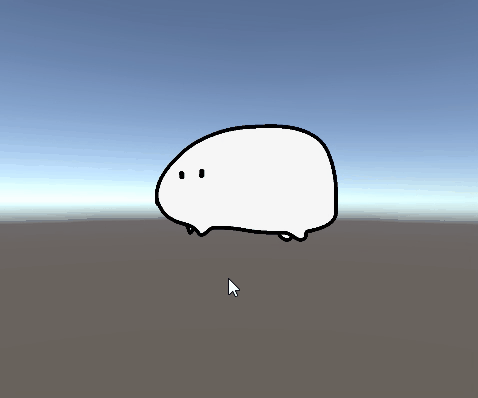
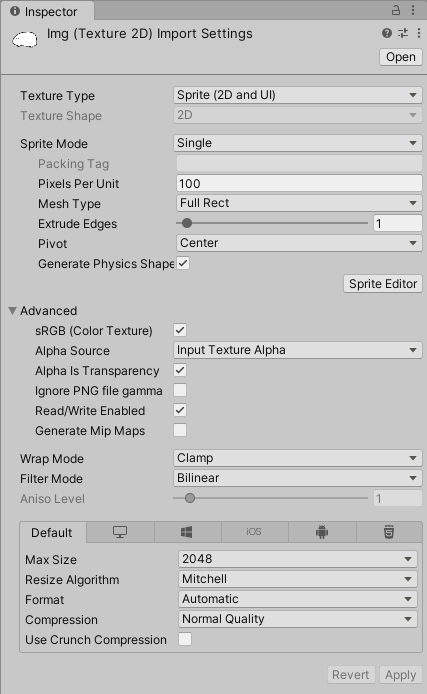

UnityのUIでボタンを使うとき、ボタン用の画像を用意して使うことが多いと思います。そんな時、「ボタン画像の透明部分も反応してしまうのは何とかしたい」と思ったこともあるでしょう。
こんな時に透明部分を反応させなくする方法を書き残しておきます。使用したUnityのバージョンは2021.1.12f1です。
まずはボタン用画像のInspectorでTexture TypeをSprite (2D and UI)に、Mesh TypeをFull Rectにし、Read/Write Enabledにチェックを入れてApplyします。
そしてボタンにアタッチされているスクリプトのvoid Start()に次のコードを書き加えます（void Awake()とかでもいい）。
GetComponent<Image>().alphaHitTestMinimumThreshold = 1f;
これで透明部分を無視するボタンができます。
既にボタン関連の処理があるスクリプトがあるならそこに書き加えれば大丈夫です。要はボタンのImageコンポーネントにアクセス出来ればいいのでボタンにアタッチする用のスクリプトを新たに作成する必要はありません。
また、指定する数字を0から1の間にすれば、ボタンがギリギリ反応する透明度を指定できます。ここでは1に設定しているので、透明度が1未満なら（完全に不透明でないと）反応しない、となるわけです。
参考文献
- Image.alphaHitTestMinimumThreshold, Unity Technologies, 2021/10/30
更新履歴
- 2021/10/30
- 記事作成